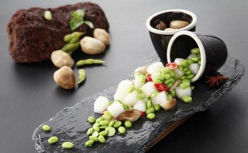

如果你去过北京地价最高的国贸地界，那个幽静质朴的素餐厅“维根小屋”，很大可能，你会遇到一位个子不高，戴眼镜的斯文男子，他叫余力，是这个餐厅的老板。
余力有含金量不错的学历——美国科学博士，但他更喜欢大家认可他的另个身份——国家公共营养师 ，蔬食营养推广者，“世界和平饮食”项目发起人。当然，余博士也会有很二很放得开的时候，不是总那么斯文。只要你愿意对他弘扬的
余力说，素食首先不是
所以，素食，而且是有科学依据的全营养素食，是我们每个人的最佳选择。
工业文明正在改变着我们的
从微观角度，在漫长的农业社会里，一个
从宏观角度看，当今世界全球暖化，环境污染，资源破坏，人口膨胀，耕地流失，粮食短缺，医保透支，化学农业，食品安全，诸多危机并存。出路何在？
过去30年科学研究发现，基于全蔬食营养（wholefoods plant based nutrition）的三顿饭解决方案，可以预防、缓解并逆转15种致死疾病，理应成为大众的基础饮食（占总饮食量的80%以上）。如果大力推广这种健康饮食的理念，就会大大降低医保成本。
吃掉动物=吃掉森林、粮食和水此外，当健康蔬食需求增加，相应地就会减少畜牧业的需求和产业规模。目前，畜牧业的温室气体排放已经超过了全球的交通工具。亚马逊森林被砍伐部分的80%和畜牧业有关，美国加州一半以上饮用水消耗都和畜牧业有关。
研究还发现，全球日益增长的人口（70亿），如果维持现有的饮食结构，粮食就会越来越匮乏。令人触目惊心的是，全球粮食只有48%是直接供人类食用，而36%粮食则是作为畜牧业的饲料。饲料的转化率非常低，几十公斤的饲料才能转化成一公斤的肉蛋奶。如果将这部分粮食直接给人吃，全球粮食可以养活至少100亿人口。
提倡健康蔬食的生活方式，会大大减少富贵病的发病比例，明显提高大众的生命活力和幸福指数。而大力推进蔬食产业，医保、粮食、农业、污染、环境、食品安全及全球暖化等诸多问题，就会迎刃而解，且成本极低，简单易行。
弱势群体的解放 今
大规模养殖场里的动物，不仅成为人类的食物，其生存环境也极为
在人类历史发展中，妇女、儿童和黑奴都曾是弱势群体。每次弱势群体的改变，又意味着文明的提升。今天，地球上的弱势群体就是那些等待被屠宰的动物。人类完全可以选择不同能量的食物，既可以提升健康指数，又改变了对待动物的方式，这就是人类文明的又一次巨大提升。如果人类从肉食为主转向蔬食为主的饮食结构，那意味着，人类将有史以来第一次共同够选择一种“对的”食物，选择一种更健康、更环保、更永续、更仁慈、更和平、更有爱心、更有智慧的饮食，而这个选择需要我们每个人的参与。
这场变革不仅仅是在产业技术的层面解决问题，因为当更多的人加入其中，蔬食背后代表的爱和疗愈的能量，也会重新开启，会在社会的各个层面开始疏理，重新链接到每个人，每个家庭，每个公司，每个社群，每个种族，每个国家……最终人类社会的自愈能力会被激活。历史将会重新定义人与人，人与自然，以及人与动物之间的关系，这种自愈力就是人类文明提升内在动力。
昨天，食物在人类进化过程中扮演了重要角色；今天，食物更体现人与人、人与自然的关系；明天，食物必将印证和推动人类文明的迁徙。古老的华夏文明传承下的13亿中华儿女，不仅要参与到这场食物的变革之中，而且理应成为引领世界和平的中坚，这也将是中华民族伟大复兴的最好诠释。
原标题：你只知道素食，你知道全蔬食营养吗？
文章转自微信公众号：深圳东山寺